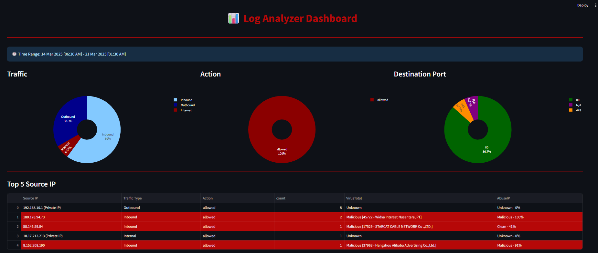
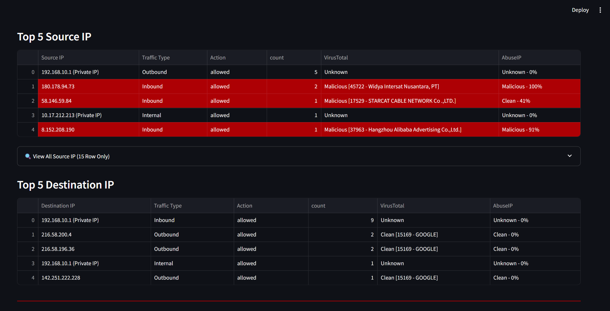
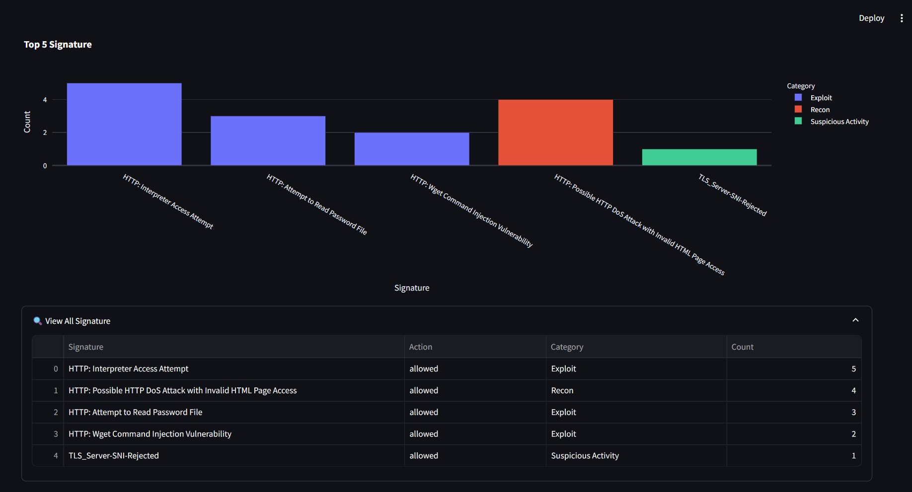
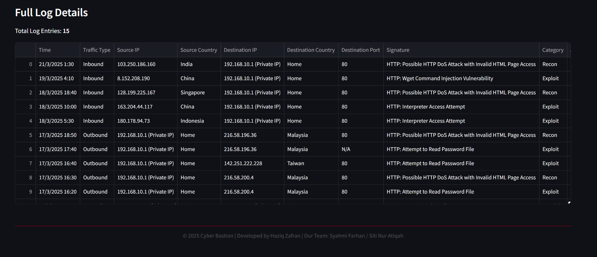
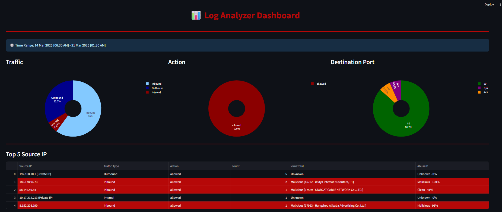
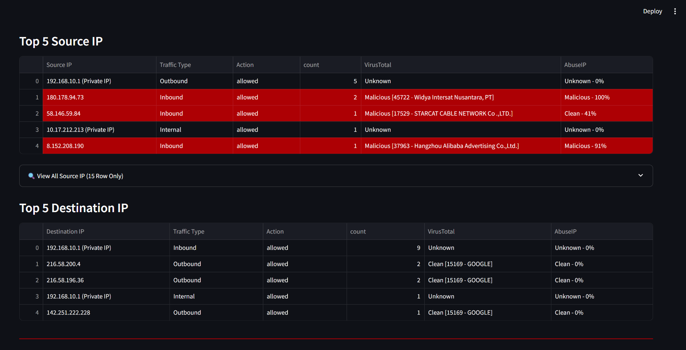
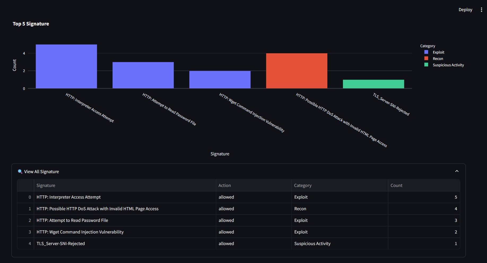
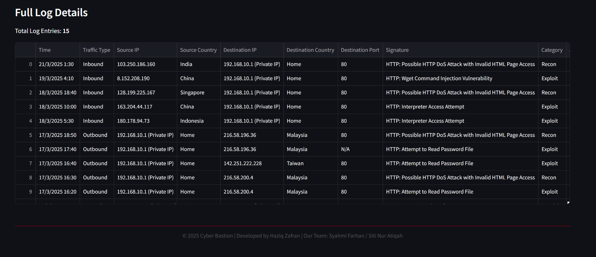

A log analyzer is a system that helps users understand the logs provided more easily. One of its advantages is the integration with VirusTotal and AbuseIPDB, which allows users to check whether an external IP address is malicious or not. In addition, this system can perform compilation if there is more than one log file and provides a dashboard to visualize and gain insights from the compiled logs.
Traditional log analysis can be time-consuming and technical. This tool simplifies the process with a beginner-friendly UI, fast visuals, and real-time feedback—making it ideal for classrooms, internal use, or quick CTF investigations.
 






